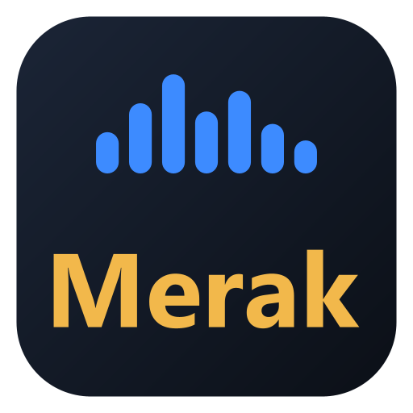

Nastavnik 2za nastavnike i profesore
Planovi, raspored, pripreme, ocjene i formativno praćenje, razredništvo, svjedodžbe i e-Dnevnik — jedni podaci za sve.
WindowsAndroid tabletProba 7 dana
Više i preuzimanje →

Merakradio i muzika
Radio stanice iz cijele bivše Jugoslavije, pjesma koja trenutno svira, muzika s telefona na televizoru, Android Auto.
Android telefonAndroid TVAndroid AutoProba 15 dana
Više i preuzimanje →